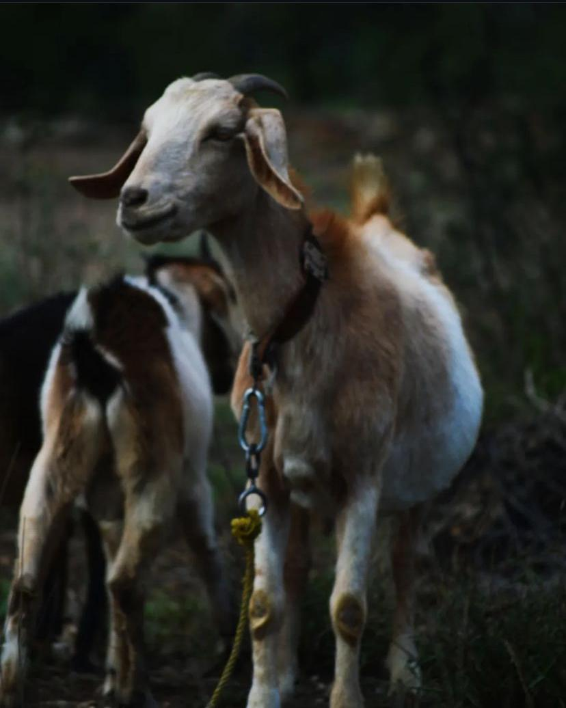
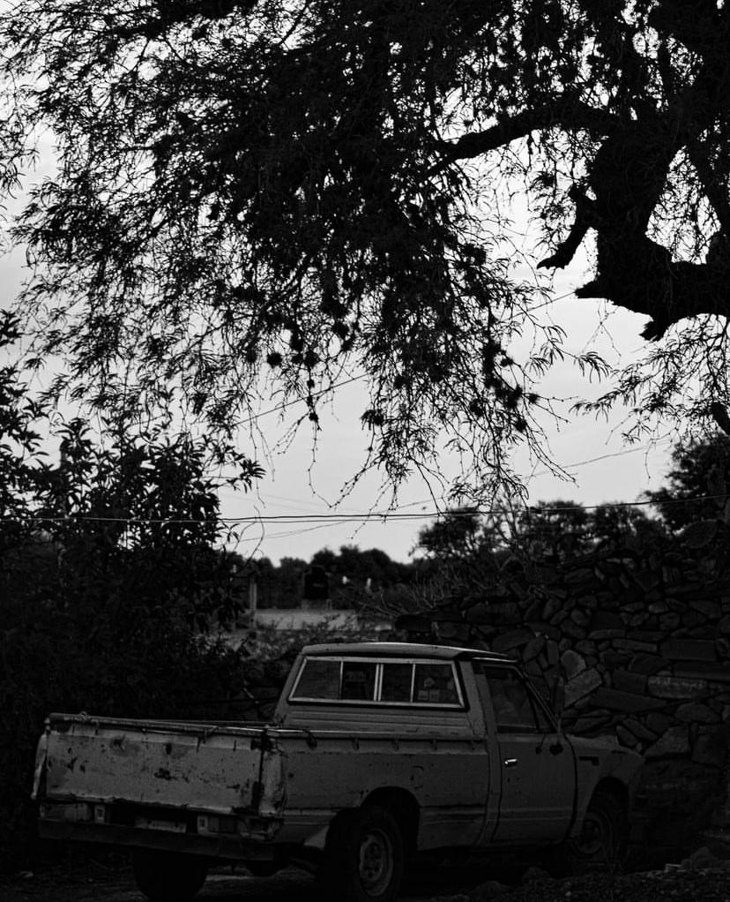
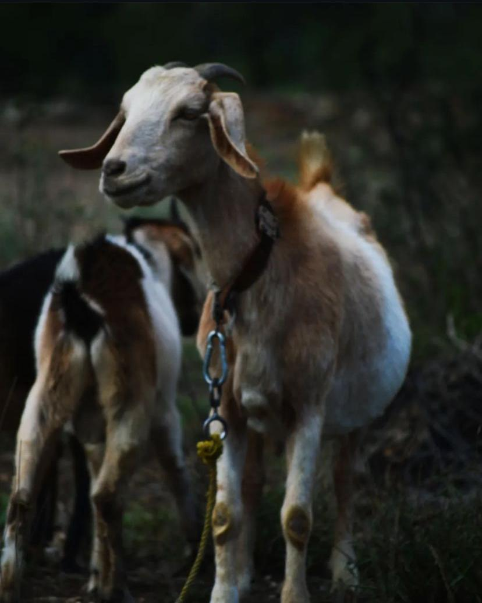
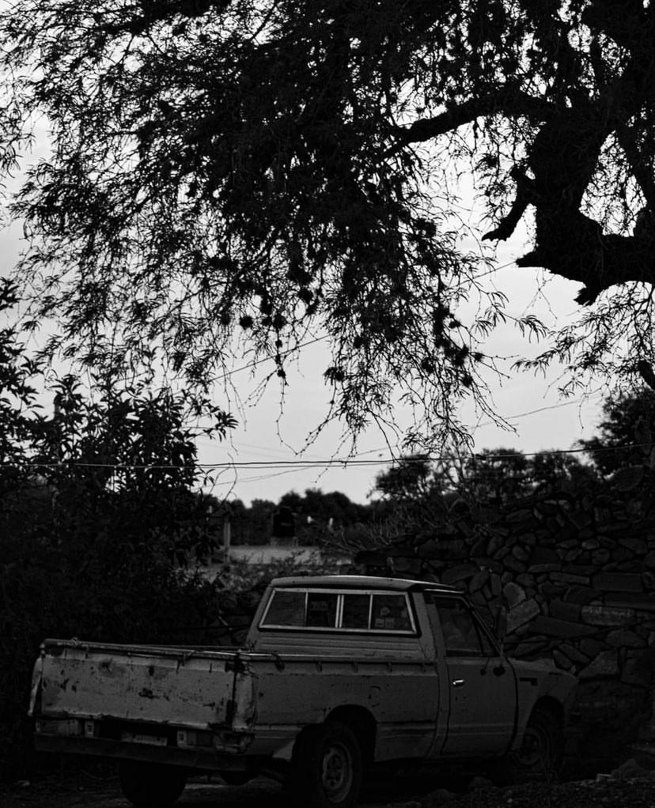

Aslinn Cassandra Sámano Cid
Fotografía y Edición de Video
Fotografía y Edición de Video
¡Hola! Mi nombre es Aslinn Cassandra Sámano Cid, y soy una apasionada estudiante de Diseño de Medios Audiovisuales en la Facultad de Diseño de la Universidad Autónoma del Estado de Morelos (UAEM). Actualmente me encuentro cursando el quinto semestre de la licenciatura, lo que me ha permitido adquirir una sólida base de conocimientos en diseño, fotografía, y edición audiovisual.
Desde que comencé mi carrera, he tenido la oportunidad de explorar una variedad de áreas creativas que me han permitido afinar mis habilidades técnicas y desarrollar una visión única para crear contenido visual.
Me apasiona la fotografía y la edición de video, campos en los que me he especializado a lo largo de mis estudios, utilizando herramientas como Adobe Photoshop, Adobe Premiere Pro, Final Cut Pro, entre otros. Soy una persona altamente motivada por los desafíos creativos y, gracias a mi formación académica y mis proyectos personales, he desarrollado una gran capacidad para trabajar en equipos multidisciplinarios y para llevar ideas a la realidad visual de manera efectiva.
Mi objetivo como diseñadora es crear experiencias visuales que comuniquen emociones, ya sea a través de una imagen estática o un proyecto audiovisual más complejo. Mi creatividad y curiosidad por la tecnología y el diseño me motivan a seguir aprendiendo y evolucionando en este campo que me apasiona cada día más. Además, me interesa seguir ampliando mis conocimientos en realidad aumentada y diseño interactivo, ya que considero que el futuro del diseño está íntimamente relacionado con la interactividad y la inmersión.

Manejo de cámaras, y conocimiento en iluminación para crear imágenes impactantes, desde retratos hasta fotografía publicitaria.
Edición creativa usando herramientas como Adobe Premiere y Adobe After Effects.
Diseño digital para campañas visuales, logotipos, y más con Adobe Illustrator.
A lo largo de mi carrera he tenido la oportunidad de trabajar en diversos proyectos que me han permitido desarrollar y perfeccionar mis habilidades técnicas y creativas. A continuación, algunas de las áreas en las que he adquirido experiencia
Creación de contenido para redes sociales: Diseño y producción de contenido visual para plataformas como Instagram, Facebook, y YouTube. Esto incluye la creación de imágenes, videos, y gráficos que transmiten el mensaje de la marca y atraen al público objetivo
Edición de video y postproducción: Edición y montaje de videos para diferentes propósitos, desde promociones hasta contenido educativo. Esto incluye la selección y organización de material, corrección de color, integración de música, efectos de sonido, y creación de transiciones y animaciones.
Fotografía y edición de fotografía: Captura de imágenes para diversos proyectos, como sesiones fotográficas, publicidad, y eventos. Además, realizo el retoque y la edición de las imágenes utilizando herramientas como Photoshop para asegurar que las fotos tengan la mejor calidad posible.
 


